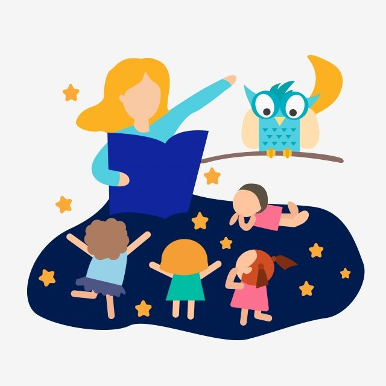
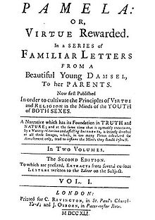

Short Stories



2.The Scarlet Letter: A Romance
3.Melville described Moby Dick to his English publisher as "a romance of adventure, founded upon certain wild legends in the Southern Sperm Whale Fisheries," and promised it would be done by the fall. Herman Melville in Horth, Lynn, ed. (1993). Correspondence. The Writings of Herman Melville. Vol. Fourteen. Evanston and Chicago: Northwestern University Press and The Newberry Library. ISBN 0-8101-0995-6.
4.William Harmon & C, Hugh Holmam, A Handbook to Literature (7th edition), p. 237.
5.See A Glastonbury Romance.
6.Margaret Anne Doody, The True Story of the Novel. New Brunswick, NJ: Rutgers University Press, 1996, rept. 1997, p. 1. Retrieved 25 April 2014.
7.J. A. Cuddon, Dictionary of Literary Terms & Literary Theory, ed., 4th edition, revised C. E. Preston. London: Penguin, 1999, pp. 76o-2.
8.M. H. Abrams, A Glossary of Literary Terms (7th edition), p. 192.
9."Essay on Romance", Prose Works volume vi, p. 129, quoted in "Introduction" to Walter Scott's Quentin Durward, ed. Susan Maning. Oxford: Oxford University Press, 1992, p. xxv.
10. See also, Nathaniel Hawthorne's, "Preface" to The House of Seven Gables: A Romance, 1851. External link to the "Preface" below
11. Grossman, Lev (8 January 2010). "All-TIME 100 Novels". TIME.
12. "To Kill a Mockingbird voted greatest novel of all time". The Telegraph. Archived from the original on 2022-01-11.
13."The 100 best novels: No 8 Frankenstein by Mary Shelley (1818)". The Guardian. 11 November 2013.
14."Hayy ibn Yaqzan | Encyclopedia.com". www.encyclopedia.com. Retrieved 2020-05-02.
15.Merriam-Webster's Encyclopedia of Literature. Kathleen Kuiper, ed. 1995. Merriam-Webster, Springfield, Mass.
16.Doody (1996), pp. 18 3, 187.
17. Doody (1996), p. 187.
18.Bloom, Harold (2002). Genius: A Mosaic of One Hundred Exemplary Creative Minds. Fourth Estate. p. 294. ISBN 978-1-84115-398-8. Retrieved 19 December 2021.
19.György Lukács The Theory of the Novel. A historico-philosophical essay on the forms of great epic literature [first German edition 1920], transl. by Anna Bostock (Cambridge, Massachusetts: The MIT Press, 1971).
20.Artistic and Architectural Index—An archive of the Internet Archive of Fiction, archived on 2011-11-24
A short story is a brief work of fiction that typically focuses on a single event or character. It is usually less than 10,000 words in length and can be read in one sitting.
Introduction
Definition of short stories: Short stories are brief works of fiction that typically focus on a single event or character. They are usually less than 10,000 words in length. Brief explanation of the benefits of reading short stories: Reading short stories can improve reading comprehension, vocabulary, critical thinking skills, and provide entertainment.Improving Reading Comprehension and Vocabulary
Short stories are easy to read and can improve reading comprehension: Due to their brevity, short stories can be read quickly and easily. This makes them an ideal tool for improving reading comprehension. Exposure to new vocabulary and writing styles: Short stories expose readers to new vocabulary and writing styles that they may not have encountered before. This can help expand their knowledge and understanding of the English language.Developing Critical Thinking Skills
Analyzing characters, plot, and themes in short stories can develop critical thinking skills: Short stories often require readers to think beyond the surface level of the story. Analyzing characters, plot, and themes can help develop critical thinking skills. Encourages readers to think beyond the surface level of the story: Short stories often have deeper meanings that require readers to think beyond what is presented on the surface.Teaching Life Lessons and Values
Short stories often convey important life lessons or values such as honesty, kindness, and perseverance: Many short stories have a moral or message that teaches important life lessons or values. Provides insight into different cultures and perspectives: Short stories can provide insight into different cultures and perspectives that readers may not have been exposed to before.Teaching Literary Elements in the Classroom
Short stories are often used in classrooms to teach literary elements such as plot, character development, and theme: Due to their brevity, short stories are an ideal tool for teaching literary elements in the classroom. Easy to analyze due to their brevity: Short stories are easy to analyze due to their brevity. This makes them an ideal tool for teaching literary elements in the classroom.Philosophical novel
The rising status of the novel in eighteenth century can be seen in the development of philosophical[54] and experimental novels.Philosophical fiction was not exactly new. Plato's dialogues were embedded in fictional narratives and his Republic is an early example of a Utopia. Ibn Tufail's 12th century Philosophus Autodidacticus with its story of a human outcast surviving on an island, and the 13th century response by Ibn al-Nafis, Theologus Autodidactus are both didactic narrative works that can be thought of as early examples of a philosophical[55] and a theological novel,[56] respectively The romance genre in the 18th century
The rise of the word novel at the cost of its rival, the romance, remained a Spanish and English phenomenon, and though readers all over Western Europe had welcomed the novel(la) or short history as an alternative in the second half of the 17th century, only the English and the Spanish had openly discredited the romance.[citation needed]But the change of taste was brief and Fénelon's Telemachus [Les Aventures de Télémaque] (1699/1700) already exploited a nostalgia for the old romances with their heroism and professed virtue. Jane Barker explicitly advertised her Exilius as "A new Romance", "written after the Manner of Telemachus", in 1715.[59] Robinson Crusoe spoke of his own story as a "romance", though in the preface to the third volume, published in 1720, Defoe attacks all who said "that [...] the Story is feign'd, that the Names are borrow'd, and that it is all a Romance; that there never were any such Man or Place".The late 18th century brought an answer with the Romantic Movement's readiness to reclaim the word romance, with the gothic romance, and the historical novels of Walter Scott. Robinson Crusoe now became a "novel" in this period, that is a work of the new realistic fiction created in the 18th century.19th-century novels
Romanticism
The very word romanticism is connected to the idea of romance, and the romance genre experienced a revival, at the end of the 18th century, with gothic fiction, that began in 1764 with Horace Walpole's The Castle of Otranto, subtitled (in its second edition) "A Gothic Story".[73] Subsequent important gothic works are Ann Radcliffe's The Mysteries of Udolpho (1794) and 'Monk' Lewis's The Monk (1795).First edition of Aleksis Kivi's The Seven Brothers (1870)The new romances challenged the idea that the novel involved a realistic depiction of life, and destabilized the difference the critics had been trying to establish, between serious classical art and popular fiction. Gothic romances exploited the grotesque,[74] and some critics thought that their subject matter deserved less credit than the worst medieval tales of Arthurian knighthood.[75]The authors of this new type of fiction were accused of exploiting all available topics to thrill, arouse, or horrify their audience. These new romantic novelists, however, claimed that they were exploring the entire realm of fictionality. And psychological interpreters, in the early 19th century, read these works as encounters with the deeper hidden truth of the human imagination: this included sexuality, anxieties, and insatiable desires. Under such readings, novels were described as exploring deeper human motives, and it was suggested that such artistic freedom would reveal what had not previously been openly visible.
20th-century novels
James Joyce's Ulysses (1922) had a major influence on modern novelists, in the way that it replaced the 18th- and 19th-century narrator with a text that attempted to record inner thoughts, or a "stream of consciousness". This term was first used by William James in 1890 and, along with the related term interior monologue, is used by modernists like Dorothy Richardson, Marcel Proust, Virginia Woolf, and William Faulkner.[92] Also in the 1920s expressionist Alfred Döblin went in a different direction with Berlin Alexanderplatz (1929), where interspersed non-fictional text fragments exist alongside the fictional material to create another new form of realism, which differs from that of stream-of-consciousness.Genre fiction
While the reader of so-called serious literature will follow public discussions of novels, popular fiction production employs more direct and short-term marketing strategies by openly declaring a work's genre. Popular novels are based entirely on the expectations for the particular genre, and this includes the creation of a series of novels with an identifiable brand name. e.g. the Sherlock Holmes series by Arthur Conan Doyle.Popular literature holds a larger market share. Romance fiction had an estimated $1.375 billion share in the US book market in 2007. Inspirational literature/religious literature followed with $819 million, science fiction/fantasy with $700 million, mystery with $650 million and then classic literary fiction with $466 million.21th-century novels
Non-traditional formats
A major development in this century has been novels published as ebooks, and the growth of web fiction, which is available primarily or solely on the Internet. A common type is the web serial: unlike most modern novels, web fiction novels are frequently published in parts over time. Ebooks are often published with a paper version. Audio books (a recording of a book reading) have also become common this century.Another non-traditional format, popular in the 21st century, is the graphic novel. However, though a graphic novel may be "a fictional story that is presented in comic-strip format and published as a book",[101] it can also refers to non-fiction and collections of short works.[102][103] While the term graphic novel was coined in the 1960s[104][105] there were precursors in the 19th century.[106] The author John Updike, when he spoke to the Bristol Literary Society in 1969, on "the death of the novel", declared that he saw "no intrinsic reason why a doubly talented artist might not arise and create a comic strip novel masterpiece".[107] A popular Japanese version of the graphic novel can be found in manga, and such works of fiction can be published in online versions.References
1. Britannica Online Encyclopedia [1] accessed 2 August 20092.The Scarlet Letter: A Romance
3.Melville described Moby Dick to his English publisher as "a romance of adventure, founded upon certain wild legends in the Southern Sperm Whale Fisheries," and promised it would be done by the fall. Herman Melville in Horth, Lynn, ed. (1993). Correspondence. The Writings of Herman Melville. Vol. Fourteen. Evanston and Chicago: Northwestern University Press and The Newberry Library. ISBN 0-8101-0995-6.
4.William Harmon & C, Hugh Holmam, A Handbook to Literature (7th edition), p. 237.
5.See A Glastonbury Romance.
6.Margaret Anne Doody, The True Story of the Novel. New Brunswick, NJ: Rutgers University Press, 1996, rept. 1997, p. 1. Retrieved 25 April 2014.
7.J. A. Cuddon, Dictionary of Literary Terms & Literary Theory, ed., 4th edition, revised C. E. Preston. London: Penguin, 1999, pp. 76o-2.
8.M. H. Abrams, A Glossary of Literary Terms (7th edition), p. 192.
9."Essay on Romance", Prose Works volume vi, p. 129, quoted in "Introduction" to Walter Scott's Quentin Durward, ed. Susan Maning. Oxford: Oxford University Press, 1992, p. xxv.
10. See also, Nathaniel Hawthorne's, "Preface" to The House of Seven Gables: A Romance, 1851. External link to the "Preface" below
11. Grossman, Lev (8 January 2010). "All-TIME 100 Novels". TIME.
12. "To Kill a Mockingbird voted greatest novel of all time". The Telegraph. Archived from the original on 2022-01-11.
13."The 100 best novels: No 8 Frankenstein by Mary Shelley (1818)". The Guardian. 11 November 2013.
14."Hayy ibn Yaqzan | Encyclopedia.com". www.encyclopedia.com. Retrieved 2020-05-02.
15.Merriam-Webster's Encyclopedia of Literature. Kathleen Kuiper, ed. 1995. Merriam-Webster, Springfield, Mass.
16.Doody (1996), pp. 18 3, 187.
17. Doody (1996), p. 187.
18.Bloom, Harold (2002). Genius: A Mosaic of One Hundred Exemplary Creative Minds. Fourth Estate. p. 294. ISBN 978-1-84115-398-8. Retrieved 19 December 2021.
19.György Lukács The Theory of the Novel. A historico-philosophical essay on the forms of great epic literature [first German edition 1920], transl. by Anna Bostock (Cambridge, Massachusetts: The MIT Press, 1971).
20.Artistic and Architectural Index—An archive of the Internet Archive of Fiction, archived on 2011-11-24